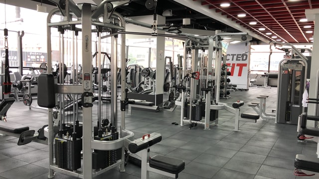

A new home for your fitness journey
 Lansing is home to several gyms and workout facilities. There are numerous physical therapists and personal athletic trainers. There's a climbing wall on the west-side. There's a few simple options for low income families.
Now for the first time, all of these are brought together under one roof. The L.E.A.R.N. Center, a proposed multi-use facility occuping space in the Meridian mall, aims to serve elite and aspiring athletes from all walks (and runs) of life. The fitness center will feature:
- Indoor and outdoor basketball and tennis courts
- Climbing and bouldering gym
- state-of-the-art weightroom
- Private fitness studios for classes
- Office and clinic space for partners
Updates
July 20th
We have issued RFPs for all of the projects for the main facility; requirements are being completed for the neighboring gym facility now.
June 11th
Meridian Township has pledged support of the project, granting the initial permits needed to make building modifications to the former Yonkers building.
June 1st
A deal was struck with Meridian Mall, allowing us to purchase rights to both the eastern and northern retail units. We will plan on using the high-ceilinged easter unit for the main facility and the northern unit for the indoor basketball and tennis courts.